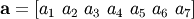
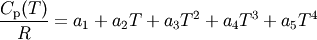
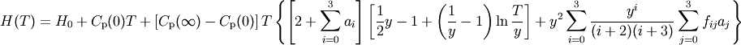

12. The rmg.thermo Module¶
A module for working with the thermodynamics of chemical species. This module seeks to provide functionality for answering the question, “Given a species, what are its thermodynamics?”
12.1. Classes in rmg.thermo¶
12.1.1. ThermoData¶
- class rmg.thermo.ThermoData¶
A base class for all forms of thermodynamic data used by RMG. The common attributes are:
Attribute Meaning Trange a list of length 2 containing the min and max temperature in K comment a string describing the source of the data
12.1.2. ThermoDatabase¶
12.1.3. ThermoDatabaseSet¶
12.1.4. ThermoGAData¶
- class rmg.thermo.ThermoGAData¶
A set of thermodynamic parameters as determined from Benson’s group additivity data. The attributes are:
Attribute Meaning H298 the standard enthalpy of formation at 298 K in J/mol S298 the standard entropy of formation at 298 K in J/mol*K Cp - the standard heat capacity in J/mol*K at 300, 400, 500,
- 600, 800, 1000, and 1500 K
- fromDatabase()¶
- Process a list of numbers data and associated description comment generated while reading from a thermodynamic database.
- getEnthalpy()¶
- Return the enthalpy in J/mol at temperature T in K.
- getEntropy()¶
- Return the entropy in J/mol*K at temperature T in K.
- getFreeEnergy()¶
- Return the Gibbs free energy in J/mol at temperature T in K.
- getHeatCapacity()¶
- Return the heat capacity in J/mol*K at temperature T in K.
- toXML()¶
- Generate an XML representation of the thermodynamic data using the xml.dom.minidom package. The dom and root parameters represent the DOM and the element in the DOM used as the parent of the generated XML.
12.1.5. ThermoNASAData¶
- class rmg.thermo.ThermoNASAData¶
A set of thermodynamic parameters given by NASA polynomials. This class stores a list of ThermoNASAPolynomial objects in the polynomials attribute. When evaluating a thermodynamic quantity, a polynomial that contains the desired temperature within its valid range will be used.
- getEnthalpy()¶
- Return the enthalpy in J/mol at temperature T in K.
- getEntropy()¶
- Return the entropy in J/mol*K at temperature T in K.
- getFreeEnergy()¶
- Return the Gibbs free energy in J/mol at temperature T in K.
- getHeatCapacity()¶
- Return the heat capacity in J/mol*K at temperature T in K.
- toCantera()¶
- Return a Cantera ctml_writer instance
12.1.6. ThermoNASAPolynomial¶
- class rmg.thermo.ThermoNASAPolynomial¶
A single NASA polynomial for thermodynamic data. The coeffs attribute stores the seven polynomial coefficients  from which the relevant thermodynamic parameters are evaluated via the expressions



The above was adapted from this page.
- getEnthalpy()¶
- Return the enthalpy in J/mol at temperature T in K.
- getEntropy()¶
- Return the entropy in J/mol*K at temperature T in K.
- getFreeEnergy()¶
- Return the Gibbs free energy in J/mol at temperature T in K.
- getHeatCapacity()¶
- Return the heat capacity in J/mol*K at temperature T in K.
- toCantera()¶
- Return a Cantera ctml_writer instance
- toXML()¶
- Append to xml dom at node root
12.1.7. ThermoWilhoitData¶
- class rmg.thermo.ThermoWilhoitData¶
A set of thermodynamic parameters given by Wilhoit polynomials, which have the form
![C_\mathrm{p}(T) = C_\mathrm{p}(0) + \left[ C_\mathrm{p}(\infty) -
C_\mathrm{p}(0) \right] y^2 \left[ 1 + (y - 1) \sum_{i=0}^3 a_i y^i \right]](../../_images/math/ec2afa8510f8e8aba5ffa41e511fee06063d2853.png)
where
 is a scaled temperature that ranges
from zero to one. The characteristic temperature
is a scaled temperature that ranges
from zero to one. The characteristic temperature  is chosen by
default to be 500 K. This formulation has the advantage of correctly
reproducting the heat capacity behavior as
is chosen by
default to be 500 K. This formulation has the advantage of correctly
reproducting the heat capacity behavior as  and
and
 . The low-temperature limit
. The low-temperature limit
 is taken to be
is taken to be  for linear molecules
and
for linear molecules
and  for nonlinear molecules. The high-temperature limit
for nonlinear molecules. The high-temperature limit
 is taken to be
is taken to be
![\left[ 3 N_\mathrm{atoms} - 1.5 \right] R](../../_images/math/a09105a9c27d1304964cc92c065cf0128a73bb2a.png) for linear molecules and
for linear molecules and
![\left[ 3 N_\mathrm{atoms} - (2 + 0.5 N_\mathrm{rotors}) \right] R](../../_images/math/e3f35e9652ad843f00f9ce45a7c926a230a42027.png) for nonlinear molecules, for a molecule composed of
for nonlinear molecules, for a molecule composed of  atoms and
atoms and  internal rotors.
internal rotors.The Wilhoit parameters are stored in the attributes cp0, cpInf, a0, a1, a2, a3, and B. There are also integration constants H0 and S0 that are needed to evaluate the enthalpy and entropy, respectively.
- getEnthalpy()¶
Return the enthalpy in J/mol at temperature T in K. The formula used is

where
 if
if  ,
,  if
if
 , and
, and  if
if  .
.
- getEntropy()¶
Return the entropy in J/mol*K at temperature T in K. The formula used is
![S(T) = S_0 +
C_\mathrm{p}(0) \ln T - \left[ C_\mathrm{p}(\infty) - C_\mathrm{p}(0) \right]
\left[ \ln y + \left( 1 + y \sum_{i=0}^3 \frac{a_i y^i}{2+i} \right) y
\right]](../../_images/math/2273aa6d19fd60a95d6d6878abb573542b4ac4d1.png)
- getFreeEnergy()¶
- Return the Gibbs free energy in J/mol at temperature T in K.
- getHeatCapacity()¶
- Return the heat capacity in J/mol*K at temperature T in K.